Sistem Informasi Manajemen Penjahit
Home
Katalog
Laporan
Logout

Kalender Pekerjaan Penjahit
Daftar Pekerjaan
Baju dinas Mas Amba (3 - 8 Juni 2019) - Finishing
Seragam batik Ibu Kus (3 - 8 Juni 2019) - Pemotongan
Dress Mbak Hani (18 - 28 Juni 2019) - Belum dimulai
+